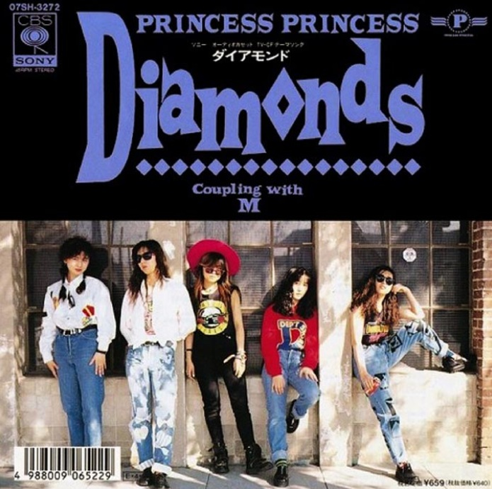

たかじいのお気に入り
← レコード棚に戻る
Diamonds プリンセスプリンセス

発売日
1989年
作詞
中山加奈子
作曲
奥居香
編曲
－
メディア
17㎝シングルレコード（ドーナツ盤）
YouTubeで見る
プリンセスプリンセスは、岸谷香さん、中山加奈子さん、今野登茂子さん、 富田京子さん、渡辺敦子さんの女性5人組バンドです。
当時はかなりの人気で、テレビやラジオでもよく流れていました。 「Diamonds」は、現在ではプリンセスプリンセスを代表する一曲として知られています。
サビのフレーズがとても印象的で、一度聴くと頭の中で何度もリピートしてしまいます。
今回、あらためてミュージックビデオを見てみました。 今ではあまり見かけなくなった当時の街の風景やファッションなども映っていて、 曲だけでなく映像からも時代を感じることができます。
「Diamonds」を聴くと、あの頃の音楽が流れていた時代を思い出します。
歌詞より
♪♪ ダイアモンドだね AH AH いくつかの場面 ♪♪
歌ネットで歌詞を見る
← レコード棚に戻る
当時はかなりの人気で、テレビやラジオでもよく流れていました。 「Diamonds」は、現在ではプリンセスプリンセスを代表する一曲として知られています。
サビのフレーズがとても印象的で、一度聴くと頭の中で何度もリピートしてしまいます。
今回、あらためてミュージックビデオを見てみました。 今ではあまり見かけなくなった当時の街の風景やファッションなども映っていて、 曲だけでなく映像からも時代を感じることができます。
「Diamonds」を聴くと、あの頃の音楽が流れていた時代を思い出します。